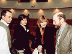
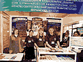
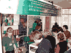

7-11 апреля 2003 года в Москве проходили X Российский национальный конгресс «Человек и Лекарство» и Выставка современных лекарственных средств, новых информационных технологий, изделий медицинского назначения и специализированных изданий.
7-11 апреля 2003 года в Москве проходили X Российский национальный конгресс «Человек и Лекарство» и Выставка современных лекарственных средств, новых информационных технологий, изделий медицинского назначения и специализированных изданий.
В рамках Конгресса под эгидой Межрегиональной Ассоциации по Клинической Микробиологии и Антимикробной Химиотерапии (МАКМАХ) и НИИ антимикробной химиотерапии (НИИАХ) была проведена Школа для практикующих врачей по специальности «Бактериология для клиницистов». В работе школе приняло участие более 150 врачей, 107 были официально зарегистрированы и получили сертификаты по антимикробной химиотерапии (см. приложение).
7 апреля при поддержке Фармакопеи США (US Pharmacopeia) был проведен симпозиум «Рациональное использование антибиотиков - мера предупреждения бактериальной резистентности». С докладами выступили профессор Джон Барлетт (США), профессор Л.С. Страчунский (Смоленск), профессор Л.П. Зуева (Санкт-Петербург), к.м.н. С.А. Рачина (Смоленск). Доклады были посвящены современным достижениям в терапии ВИЧ-инфекции, проблемам мониторинга резистентности социально-значимых инфекций в России, роли инфекционного контроля в профилактике инфекций, фармакоэпидемиологическим подходам к оптимизации применения антибиотиков.
Кроме этого, на симпозиуме были представлены первые результаты проекта дистанционного образования в области антимикробной терапии, организованного сотрудниками НИИ антимикробной химиотерапии и кафедры клинической фармакологии Смоленской государственной медицинской академии при поддержке Агентства США по международному развитию и Фармакопеи США, и итоги обучения первой группы слушателей как с точки зрения преподавателя (к.м.н. В.В. Рафапьский), так и с точки зрения обучающегося (к.м.н. Е.Н. Якушева).
В рамках симпозиума состоялась презентация «Руководства по инфекционному контролю в стационаре» (ISID), подготовленного интернациональным коллективом ведущих специалистов в области эпидемиологии, инфекционного контроля, клинической микробиологии и инфекционных болезней. В дальнейшем руководство будет распространяться бесплатно среди практикующих врачей России.
На выставке был представлен стенд МАКМАХ и НИИ АХ, на котором бесплатно распространялись «Практическое руководство по антиинфекционной химиотерапии» и «Руководство по инфекционному контролю в стационаре» и информация о дистанционном обучении по антимикробной терапии.
Фотограмии с конгресса
(выберите картинку для просмотра увеличенного изображения):
| Профессор Дж. Бартлетт (США)
Симпозиум «Рациональное использование антибиотиков - мера предупреждения бактериальной резистентности» |
| Профессор В.Б. Белобородов.
Школа для практикующих врачей «Бактериология для клиницистов» |
| Школа для практикующих врачей «Бактериология для клиницистов» |

| Школа для практикующих врачей «Бактериология для клиницистов». Дискуссия |
| Вручение сертификата слушателю первой группы ДО по антимикробной терапии Потапову И.И. |

| Стенд МАКМАХ и НИИ антимикробной химиотерапии |
| Стенд МАКМАХ и НИИ антимикробной химиотерапии |

| Стенд МАКМАХ и НИИ антимикробной химиотерапии |